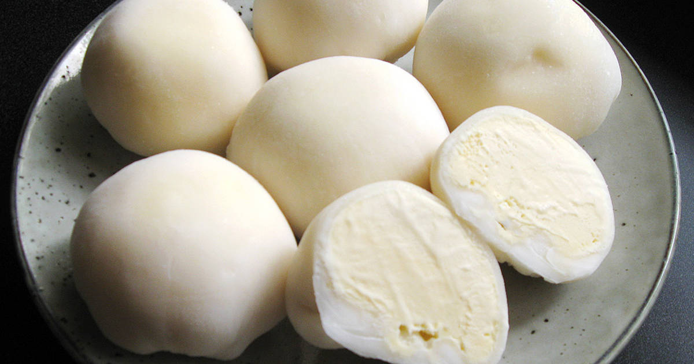

Traditional Japanese Mochi Ice Cream

Description
Gooey, sticky & super sweet! Try this mochi recipe at home.
Ingredients
- 1 ½ cups (8oz/225g) vanilla ice cream
- 1 cup (5½oz/160g) sweet glutinous rice flour
- 1/4 cup (2oz/57g) granulated sugar
- 1 cup (8oz/225ml) water
- A few drops of red food coloring (optional)
- Cornstarch for dusting (or potato starch)
Steps
- Line a small tray with parchment paper.
-
With a small ice cream scoop or spoon, scoop out twelve 2
tablespoon-sized scoops of ice cream (about .75oz /20g) onto the
prepared and place in the freezer.
-
In a large microwave-safe bowl combine the sweet rice flour, sugar, and
water, cover with plastic wrap and microwave for one minute.
-
Stir the rice flour mixture with a whisk to remove any lumps, re-cover
with the plastic wrap, and microwave for another minute.
-
Dip a rubber spatula in water and stir the rice mixture again (do not
use the whisk this time - it will be too sticky).
-
Cover the rice mixture one more time and microwave for another 30
seconds. It will now be a sticky dough. If adding in food dye stir it in
at this point until it's evenly throughout the dough.
-
Place a large parchment paper on your counter and cover the paper with a
generous dusting of cornstarch (or potato starch).
-
With a wet spatula, scrape the dough onto the cornstarch and dust the
top of the dough with more cornstarch.
-
Roll the dough into a rectangle no less than 1/4 inch thick (about
12x14inches/30x35cm). Keep dusting the top and bottom of the dough with
cornstarch as you roll or it will stick.
-
Once the dough is rolled out, place the parchment paper on a cookie
sheet and place in the refrigerator to set for 30 minutes.
-
Once the dough has set, cut circles of dough with a 3 ¾ inch (9½ cm)
cutter.
-
Pick up one circle of dough and brush off the excess cornstarch from
both sides.
-
Working quickly, take one scoop of ice cream, place in the center of the
circle flat side facing you. Press the edges of the dough together
around the ice cream ball, squeezing to seal.
-
Wrap the mochi ice cream balls in cling wrap and place seam side down
back in the freezer to set. You could use an egg carton to keep them
upright. Repeat with remaining circles of dough and ice cream balls.
Allow mochi to freeze totally for a minimum of 2 hours in the freezer.
-
When ready to eat, remove from the freezer and let sit for a few minutes
to let soften.
- Store in an airtight container in the freezer for up to 1 week.